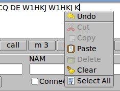

Press function key F1...F12 to add the macro text to the end of the transmit text buffer. You can also press the associated button with the mouse left-click.
| Right-click with the mouse in the text buffer control to open a pop-up menu. You can cut, copy and paste to/from another application. Use the left-mouse drag to mark text. You can clear the text buffer from this pop-up |  |
Enter the data for each contact in the STA - station call, NAM - operator name, Freq: - frequency ofoperation, X_in - contest exchange received.
Clear the logbook area by pressing the Clear button
If you are running the program fllog, a logbook server program, you can connect to the server for the purpose of logging your exchange, looking up previous QSOs (automatic), and checking for duplicates during a CW contest. Check the Connect box and the program will start data exchanges with the server. If the connection is successful the button remains checked. If not then it returns to the unchecked state. Upon successful connection the Log button and the Ck Dups buttons are activated. Press the Log button to log the current qso (also see below for use of macros and duplicate parameter selection). Press the Ck Dups button for contest duplicate checking. Simply enter the STA callsign and if it is a dup the control will turn red.
| <CLL> | your callsign, entered in the CLL control |
| <QTH> | your QTH, entered in the QTH control |
| <LOC> | your Locator, entered in the LOC control |
| <OPR> | your name, entered in the OPR control |
| <STA> | the other stations callsign, entered in the STA control above |
| <NAM> | the other stations name, entered in the NAM control above |
| <#> | Contest: serial number, starting # entered in Next # control |
| <+> | Contest: increment the serial number |
| <-> | Contest: decrement the serial number |
| <LOG> | Logbook: send the data to the fllog server program (if running) |
| <X> | Contest: send the contents of the Xout control |
Check the Zeros control if you want each serial number to have leading zeros.
Duplicates can be tested for callsign only, or callsign plus a time span using the "Time Span" and "Ck span" controls. You can also include a requirement for the band the match, "Ck Band"
Farnsworth code speed
Farnsworth code speed allows characters to be sent at a faster rate that the word rate. For example you can send the characters at 24 wpm and the word rate at 15 wpm. The program will adjust the inter character and inter word spacing to produce the desired effect. This capability is only available using the CW keyboard and not from the CW paddle or key inputs. Set the word rate and enable the Farnsworth check box to use this feature.
The CW-keyboard character WPM and the Paddle WPM are set by the same control on the CW pulldown tab. The Weight and Attack controls are also linked to both the Paddle and the CW keyboard code generator.